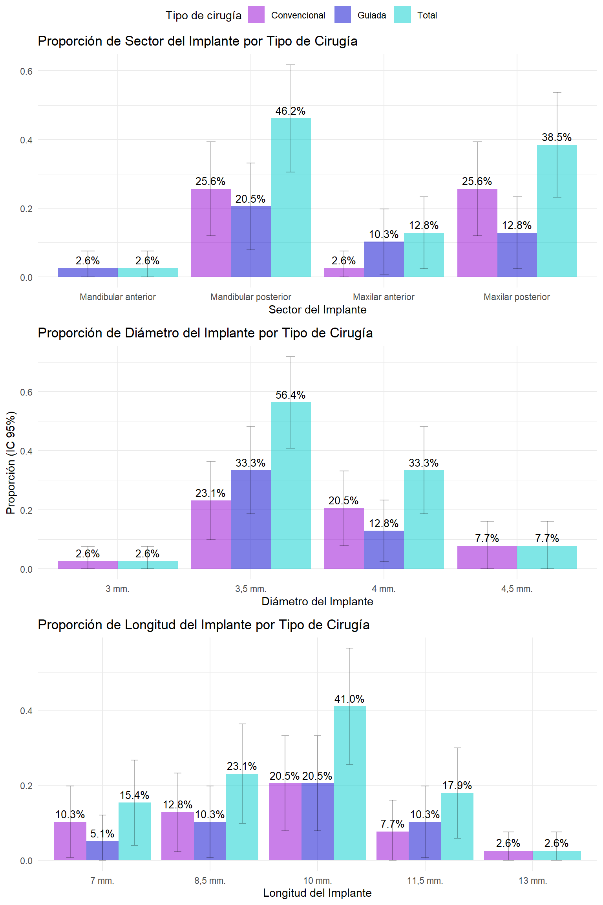
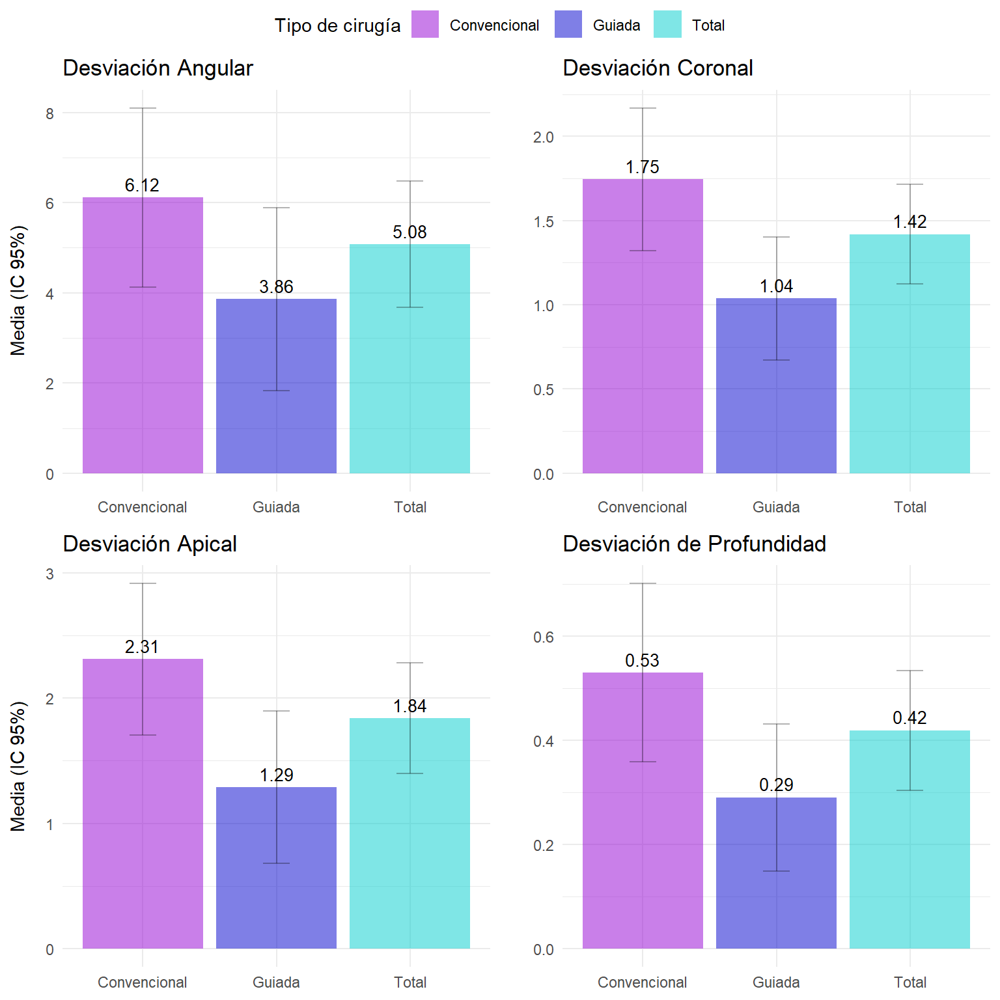
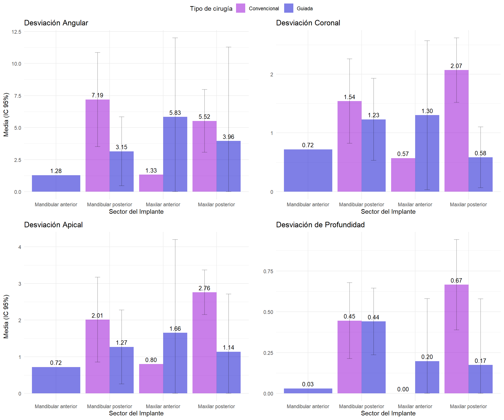
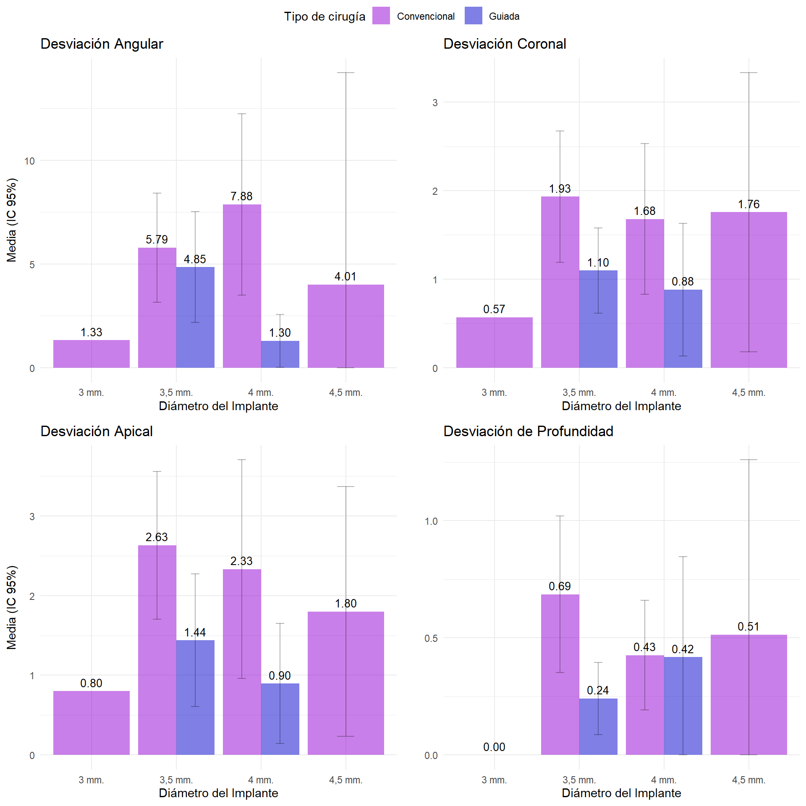
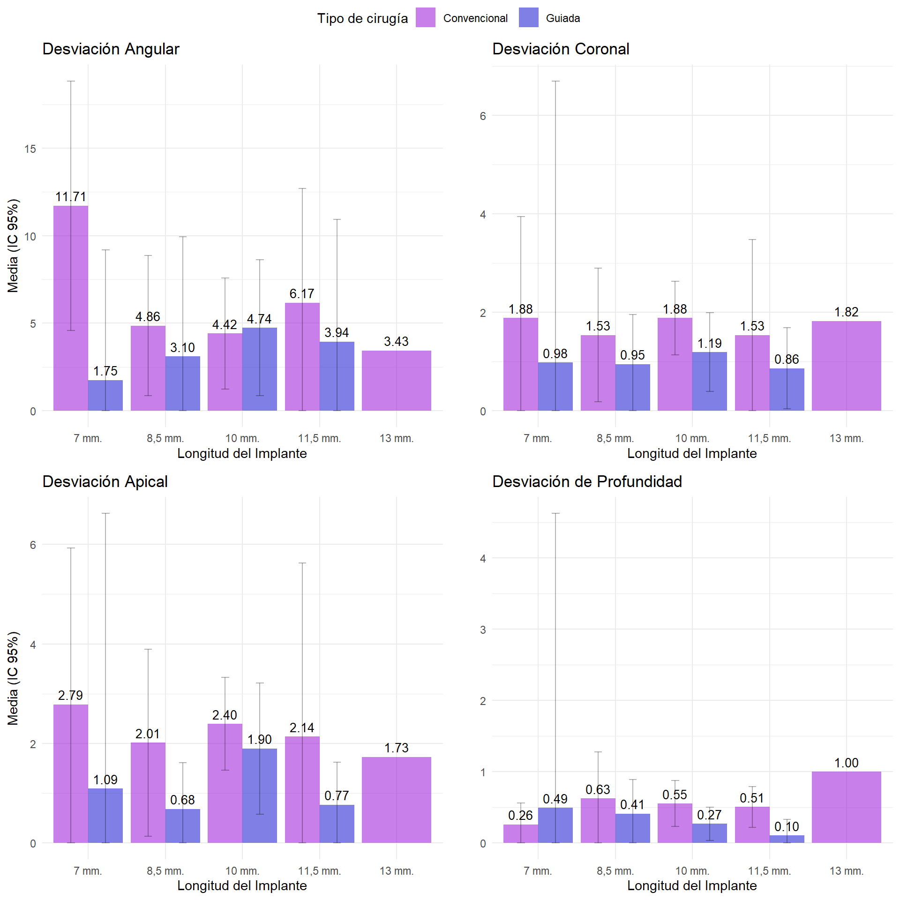
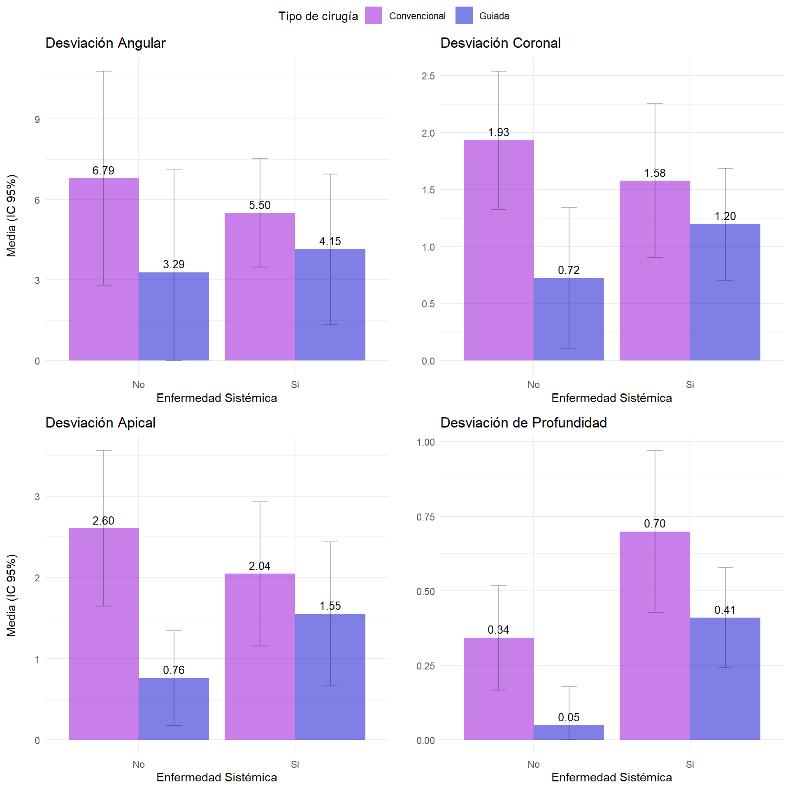
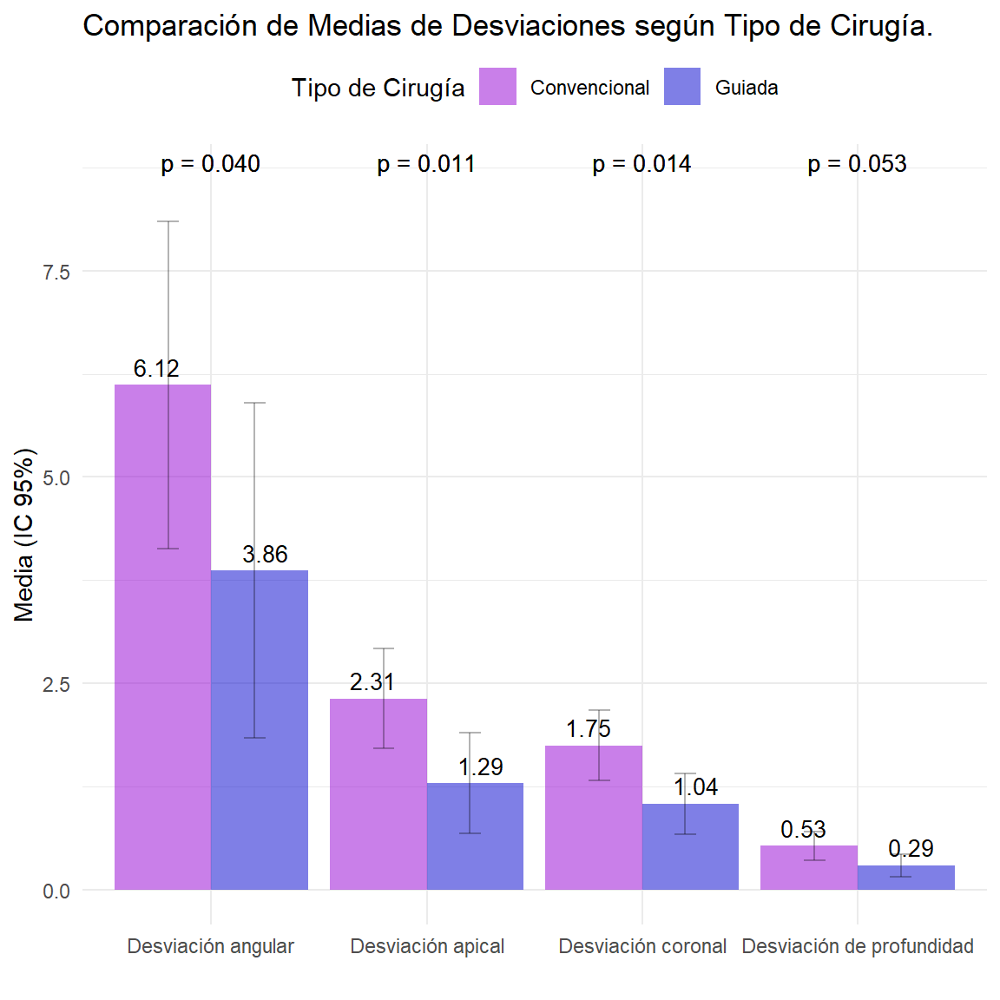

COMPARACIÓN DE LA PRECISIÓN EN LA INSTALACIÓN DE IMPLANTES ENTRE CIRUGÍA CONVENCIONAL Y CIRUGÍA GUIADA ESTÁTICA EN UN CONTEXTO UNIVERSITARIO: ESTUDIO DE COHORTE RETROSPECTIVO
![]()
1 Librerias de R y administracion de datos.
Código
install_and_load_packages <- function(packages) {
for (package in packages) {
if (!require(package, character.only = TRUE)) {
install.packages(package)
library(package, character.only = TRUE)
}
}
}
necessary_packages <- c("haven", "knitr", "readxl", "tidyverse","Hmisc", "data.table", "survey", "scales","gt","FactoMineR","factoextra","vcd","reshape2","corrplot","klaR", "stringr","table1","ggpubr","rcompanion", "dunn.test")
install_and_load_packages(necessary_packages)
opts_chunk$set(
echo = TRUE,
warning = FALSE,
message = FALSE
)Código
data <- read_excel(paste0(gsub("/docs", "", getwd()), "/data/data.xlsx"))
cleandata <- data %>%
mutate(across(where(is.character), as.factor)) %>%
mutate(`Longitud del implante` = fct_relevel(`Longitud del implante`,
"7 mm.", "8,5 mm.", "10 mm.", "11,5 mm.", "13 mm."))
summarize_columns <- function(df) {
col_names <- names(df)
summary_df <- data.frame(
Variable = character(),
"Tipo de Variable (Informática)" = character(),
"Datos perdidos" = integer(),
stringsAsFactors = FALSE,
check.names = FALSE
)
for (col_name in col_names) {
column <- col_name
if (is.factor(df[[col_name]])) {
niveles <- paste(levels(df[[col_name]]), collapse = ", ")
column_class <- paste("Factor (", niveles, ")", sep = "")
} else {
column_class <- paste0(toupper(substring(class(df[[col_name]])[1], 1, 1)),
substring(class(df[[col_name]])[1], 2))
}
NA_count <- sum(is.na(df[[col_name]]))
summary_df <- rbind(summary_df, data.frame(
Variable = column,
"Tipo de Variable (Informática)" = column_class,
"Datos perdidos" = NA_count,
stringsAsFactors = FALSE,
check.names = FALSE
))
}
names(summary_df) <- gsub("\\.", " ", names(summary_df))
return(summary_df)
}2 Introducción.
Se desarrolló un estudio de cohorte retrospectivo, donde se analizó la presición de instalación de implantes en pacientes operados en el Postgrado de Implantología Bucomaxilofacial (BMF) de la Universidad Mayor de Santiago, Chile, entre diciembre de 2022 y marzo 2024 en el marco de su control de mantención implantológico. Los pacientes que finalizaron su tratamiento en el posgrado de implantología son llamados a un control implantológico rutinario que es costeado por el mismo. Durante el control se evaluó clínicamente la integridad de la corona, los contactos oclusales que presenta, el implante y los tejidos blandos que lo rodean. Para esto se retiró la corona del implante y realizó un destartraje en caso de presentarse cálculo en relación a los tejidos periimplantarios. Finalmente se instaló nuevamente la corona, se refuerzan las indicaciones de cuidado al paciente además de resolver sus dudas y se cita para otro control.
3 Metodología.
3.1 Variables dependientes.
Las variables asociadas a precision fueron las siguientes:
Desviación angular (medida en grados): una angulación entre los ejes longitudinales de los implantes instalados planificados y reales.
Desviación coronal (medida en mm.): una desviación lineal entre el punto de entrada (es decir, el centro de la plataforma) de los implantes instalados planificados y reales.
Desviación apical (medida en mm.): una desviación lineal entre el punto del vértice de los implantes instalados planificados y reales.
Desviación de profundidad (medida en mm.): una desviación lineal medida en la dirección vertical entre el centro de la plataforma de los implantes instalados planeados y reales.
3.2 Variables Independientes.
Tipo de Cirugía.
Ubicación del Implante.
Sector del Implante.
Zona del Implante.
Diámetro del Implante.
Longitud del Implante.
Variables clinicas-sociodemograficas.
Las variables y su formato informático están descrita en la tabla 1:
Código
summary_table <- summarize_columns(cleandata)
gt(summary_table) %>%
tab_caption(caption = "Tabla 1: Resumen de las variables y tipo informático.")| Variable | Tipo de Variable (Informática) | Datos perdidos |
|---|---|---|
| ID | Numeric | 0 |
| Edad | Numeric | 0 |
| Sexo | Factor (Femenino, Masculino) | 0 |
| Enfermedad sistémica | Factor (No, Si) | 0 |
| Medicamentos | Factor (No, Si) | 0 |
| Fumador | Factor (No, Si) | 0 |
| Año de atención de la especialidad de IBM | Factor (Primero, Segundo, Tercero) | 0 |
| Zona del implante | Factor (1.1, 1.3, 1.4, 1.5, 1.6, 2.1, 2.2, 2.4, 2.5, 2.6, 2.7, 3.3, 3.4, 3.5, 3.6, 4.4, 4.5, 4.6, 4.7) | 0 |
| Tipo de cirugía | Factor (Convencional, Guiada) | 0 |
| Ubicación del implante | Factor (Mandibular, Maxilar) | 0 |
| Sector del Implante | Factor (Mandibular anterior, Mandibular posterior, Maxilar anterior, Maxilar posterior) | 0 |
| Longitud del implante | Factor (7 mm., 8,5 mm., 10 mm., 11,5 mm., 13 mm.) | 0 |
| Longitud del implante (Continuo) | Numeric | 0 |
| Diámetro del Implante | Factor (3 mm., 3,5 mm., 4 mm., 4,5 mm.) | 0 |
| Diámetro del Implante (Continuo) | Numeric | 0 |
| Desviación angular | Numeric | 0 |
| Desviación coronal | Numeric | 0 |
| Desviación apical | Numeric | 0 |
| Desviación de profundidad | Numeric | 0 |
| Hounsfield Units | Numeric | 0 |
| Hounsfield Units (Categorizacion LZ) | Factor (Tipo 1, Tipo 2, Tipo 3, Tipo 4, Tipo 5) | 0 |
3.3 Diseño muestral.
Se ocupó un diseño muestral para la comparabilidad de pares de medias. El cálculo muestral se realizó en base a la variable dependiente con mayor varianza según estudios previos y la variable independiente principal de tipo dicotómica: Tipo de instalación de implante. Este cálculo del tamaño fue para cada submuestrade manera balanceada (\(n_{guiada}\) y \(n_{convencional}\)), asumiendo normalidad de la variable dependiente (Desviasiones), tal que:
\[ n_{guiada} = n_{convencional} = \frac{2\left(z_{\frac{\alpha}{2}} + z_{\beta}\right)^2 \sigma^2}{\epsilon^2} \]
En donde se ocupó:
Una significancia estadística \((\alpha = 0.05)\) tal que, \[ z_{\frac{\alpha}{2}} = 1.96 \]
Una potencia estadística \((1 - \beta = 0.8)\) tal que, \[ z_{\beta} = 0.84 \]
La varianza poblacional \(\sigma^2\) se reemplazó por la mayor varianza muestral \(s^2\) observada (asumiendo homocedasticidad entre submuestras) en estudios anteriores.
De acuerdo a lo anterior se determina que el tamaño muestral es de 13 implantes para cada grupo.
3.4 Análisis estadístico.
Para las variables numéricas (desviaciones), se evaluó normalidad con el test Shapiro-Wilk, se calcularon la media con sus respectivos intervalos de confianza, la desviación estándar, los valores mínimos, los cuartiles (Q1, mediana, Q3) y los valores máximos. Para las variables categóricas, se calcularon las frecuencias absolutas y relativas para cada nivel de la variable.
Para comparar las diferencias de medias de las desviasionbes, entre tipo de cirugía convenciona y guiada, se utilizó la prueba de Mann-Whitney U, una prueba estadística no paramétrica.
Se utilizó la prueba Scheirer-Ray-Hare (extensión de la prueba de Kruskal-Wallis para dos factores) para evaluar las diferencias entre las variables dependientes y tipo de cirugía y otras variables independientes categóricas. Esta prueba no paramétrica es adecuada para comparar 1 o más grupos independientes y no asume una distribución normal de los datos.
Se realizaron comparaciones post hoc utilizando la prueba de Dunn para identificar diferencias significativas entre pares de grupos específicos dentro de cada variable independiente según tipo de cirgugía. Esta prueba se utilizó debido a su capacidad para comparar dos grupos independientes y su aplicabilidad a datos no paramétricos.
Todos los datos se analizaron mediante pruebas de dos colas con un nivel de significancia de \(\alpha=0,05\) y se estimaron intervalos de confianza (IC) con un nivel de confianza de \(1-\alpha=0,95\). El análisis estadístico se realizó utilizando el software estadístico R (Versión 4.4) y Rstudio (Versión 2023.03.0+386).
4 Resultados.
4.1 Análisis estadístico descriptivo.
Código
groupdata <- cleandata %>% dplyr::select(c(1:7,9)) %>% distinct()
mean_sd_ci <- function(x, ...) {
mean_val <- mean(x, na.rm = TRUE)
sd_val <- sd(x, na.rm = TRUE)
n <- sum(!is.na(x))
error <- qt(0.975, df = n - 1) * sd_val / sqrt(n)
lower_ci <- mean_val - error
upper_ci <- mean_val + error
sprintf("<b>%0.1f</b> (%0.1f) [%0.1f, %0.1f]", mean_val, sd_val, lower_ci, upper_ci)
}
prop_freq_ci <- function(x, ...) {
tbl <- table(x, useNA = "no")
n <- sum(tbl)
prop <- prop.table(tbl)
ci_lower <- prop - qnorm(0.975) * sqrt(prop * (1 - prop) / n)
ci_upper <- prop + qnorm(0.975) * sqrt(prop * (1 - prop) / n)
ci_lower <- pmax(0, ci_lower)
ci_upper <- pmin(1, ci_upper)
levels <- names(tbl)
values <- sprintf("<b>%d</b> (%.1f%%) [%.1f%%, %.1f%%]", tbl, prop * 100, ci_lower * 100, ci_upper * 100)
paste0(
"<table>",
paste0("<tr><td style='text-align:left'><b>", levels, "</b></td>",
"<td style='text-align:right'>", values, "</td></tr>", collapse = ""),
"</table>"
)
}
table1(~ Edad + Sexo + `Enfermedad sistémica` + Fumador + `Año de atención de la especialidad de IBM` | `Tipo de cirugía`,
data = groupdata,
overall = "Total",
render.continuous = mean_sd_ci,
render.categorical = prop_freq_ci,
caption = "Tabla 2: Características clínicas y sociodemográficas de los pacientes según tipo de cirugía",
footnote = "Nota: Variables numéricas: Media (Desviación Estandar) [Intervalo de confianza 95%], Variables categóricas: Fecuencia absoluta (Porcentaje) [Intervalo de confianza 95%]")|
Convencional |
Guiada |
Total |
|||||||||||||||||||
|
Nota: Variables numéricas: Media (Desviación Estandar) [Intervalo de confianza 95%], Variables categóricas: Fecuencia absoluta (Porcentaje) [Intervalo de confianza 95%] |
|||||||||||||||||||||
|
Edad |
60.9 (4.5) [56.7, 65.0] |
57.8 (14.5) [42.6, 73.1] |
59.5 (10.0) [53.4, 65.5] |
||||||||||||||||||
|
Sexo |
|
|
|
||||||||||||||||||
|
Enfermedad sistémica |
|
|
|
||||||||||||||||||
|
Fumador |
|
|
|
||||||||||||||||||
|
Año de atención de la especialidad de IBM |
|
|
|
||||||||||||||||||
Código
table1(~ `Zona del implante` + `Sector del Implante` + `Longitud del implante` + `Diámetro del Implante` + `Desviación angular` + `Desviación coronal` + `Desviación apical` + `Desviación de profundidad` | `Tipo de cirugía`,
data = cleandata,
overall = "Total",
render.continuous = mean_sd_ci,
render.categorical = prop_freq_ci,
caption = "Tabla 3: Características de los implantes según tipo de cirugía",
footnote = "Nota: Variables numéricas: Media (Desviación Estandar) [Intervalo de confianza 95%], Variables categóricas: Fecuencia absoluta (Porcentaje) [Intervalo de confianza 95%]")|
Convencional |
Guiada |
Total |
|||||||||||||||||||||||||||||||||||||||||||||||||||||||||||||||||||||||||||||||||||||||||||||||||||||||||||||||||||
|
Nota: Variables numéricas: Media (Desviación Estandar) [Intervalo de confianza 95%], Variables categóricas: Fecuencia absoluta (Porcentaje) [Intervalo de confianza 95%] |
|||||||||||||||||||||||||||||||||||||||||||||||||||||||||||||||||||||||||||||||||||||||||||||||||||||||||||||||||||||
|
Zona del implante |
|
|
|
||||||||||||||||||||||||||||||||||||||||||||||||||||||||||||||||||||||||||||||||||||||||||||||||||||||||||||||||||
|
Sector del Implante |
|
|
|
||||||||||||||||||||||||||||||||||||||||||||||||||||||||||||||||||||||||||||||||||||||||||||||||||||||||||||||||||
|
Longitud del implante |
|
|
|
||||||||||||||||||||||||||||||||||||||||||||||||||||||||||||||||||||||||||||||||||||||||||||||||||||||||||||||||||
|
Diámetro del Implante |
|
|
|
||||||||||||||||||||||||||||||||||||||||||||||||||||||||||||||||||||||||||||||||||||||||||||||||||||||||||||||||||
|
Desviación angular |
6.1 (4.4) [4.1, 8.1] |
3.9 (4.1) [1.8, 5.9] |
5.1 (4.3) [3.7, 6.5] |
||||||||||||||||||||||||||||||||||||||||||||||||||||||||||||||||||||||||||||||||||||||||||||||||||||||||||||||||||
|
Desviación coronal |
1.7 (0.9) [1.3, 2.2] |
1.0 (0.7) [0.7, 1.4] |
1.4 (0.9) [1.1, 1.7] |
||||||||||||||||||||||||||||||||||||||||||||||||||||||||||||||||||||||||||||||||||||||||||||||||||||||||||||||||||
|
Desviación apical |
2.3 (1.3) [1.7, 2.9] |
1.3 (1.2) [0.7, 1.9] |
1.8 (1.4) [1.4, 2.3] |
||||||||||||||||||||||||||||||||||||||||||||||||||||||||||||||||||||||||||||||||||||||||||||||||||||||||||||||||||
|
Desviación de profundidad |
0.5 (0.4) [0.4, 0.7] |
0.3 (0.3) [0.1, 0.4] |
0.4 (0.4) [0.3, 0.5] |
||||||||||||||||||||||||||||||||||||||||||||||||||||||||||||||||||||||||||||||||||||||||||||||||||||||||||||||||||
Código
prepare_data <- function(data, var) {
data_by_type <- data %>%
group_by(`Tipo de cirugía`, {{ var }}) %>%
dplyr::summarize(n = n(), .groups = 'drop') %>%
mutate(prop = n / sum(n),
ci_lower = pmax(0, prop - qnorm(0.975) * sqrt(prop * (1 - prop) / sum(n))),
ci_upper = pmin(1, prop + qnorm(0.975) * sqrt(prop * (1 - prop) / sum(n))))
data_total <- data %>%
group_by({{ var }}) %>%
dplyr::summarize(n = n(), .groups = 'drop') %>%
mutate(prop = n / sum(n),
ci_lower = pmax(0, prop - qnorm(0.975) * sqrt(prop * (1 - prop) / sum(n))),
ci_upper = pmin(1, prop + qnorm(0.975) * sqrt(prop * (1 - prop) / sum(n))),
`Tipo de cirugía` = "Total")
combined_data <- bind_rows(data_by_type, data_total)
return(combined_data)
}
create_plot <- function(data, var, title, x_label, show_y_label = FALSE) {
ggplot(data, aes(x = {{ var }}, y = prop, fill = `Tipo de cirugía`)) +
geom_bar(stat = "identity", position = position_dodge(width = 0.9), alpha = 0.5) +
geom_errorbar(aes(ymin = ci_lower, ymax = ci_upper), width = 0.2, position = position_dodge(width = 0.9), alpha = 0.3) +
geom_text(aes(label = sprintf("%.1f%%", prop * 100)),
position = position_dodge(width = 0.9),
vjust = -0.5,
size = 3.5) +
scale_fill_manual(values = c("Convencional" = "darkviolet", "Guiada" = "blue3", "Total" = "cyan3")) +
labs(title = title,
y = if (show_y_label) "Proporción (IC 95%)" else NULL,
x = x_label) +
theme_minimal() +
theme(legend.position = "top")
}
sector_data <- prepare_data(cleandata, `Sector del Implante`)
diametro_data <- prepare_data(cleandata, `Diámetro del Implante`)
longitud_data <- prepare_data(cleandata, `Longitud del implante`)
plot_sector <- create_plot(sector_data, `Sector del Implante`, "Proporción de Sector del Implante por Tipo de Cirugía", "Sector del Implante", FALSE)
plot_diametro <- create_plot(diametro_data, `Diámetro del Implante`, "Proporción de Diámetro del Implante por Tipo de Cirugía", "Diámetro del Implante", TRUE)
plot_longitud <- create_plot(longitud_data, `Longitud del implante`, "Proporción de Longitud del Implante por Tipo de Cirugía", "Longitud del Implante", FALSE)
ggarrange(plot_sector, plot_diametro, plot_longitud,
ncol = 1, nrow = 3,
common.legend = TRUE, legend = "top",
align = "v", heights = c(1, 1, 1))
Código
prepare_data_mean <- function(data, var) {
data_by_type <- data %>%
group_by(`Tipo de cirugía`) %>%
dplyr::summarize(mean_val = mean({{ var }}, na.rm = TRUE),
sd_val = sd({{ var }}, na.rm = TRUE),
n = sum(!is.na({{ var }})), .groups = 'drop') %>%
mutate(se = sd_val / sqrt(n),
ci_lower = mean_val - qt(0.975, df = n - 1) * se,
ci_upper = mean_val + qt(0.975, df = n - 1) * se)
data_total <- data %>%
dplyr::summarize(mean_val = mean({{ var }}, na.rm = TRUE),
sd_val = sd({{ var }}, na.rm = TRUE),
n = sum(!is.na({{ var }})), .groups = 'drop') %>%
mutate(se = sd_val / sqrt(n),
ci_lower = mean_val - qt(0.975, df = n - 1) * se,
ci_upper = mean_val + qt(0.975, df = n - 1) * se,
`Tipo de cirugía` = "Total")
combined_data <- bind_rows(data_by_type, data_total)
return(combined_data)
}
create_plot_mean <- function(data, var_name, title, y_label, show_y_label = FALSE) {
ggplot(data, aes(x = `Tipo de cirugía`, y = mean_val, fill = `Tipo de cirugía`)) +
geom_bar(stat = "identity", position = position_dodge(width = 0.9), alpha = 0.5) +
geom_errorbar(aes(ymin = ci_lower, ymax = ci_upper), width = 0.2, position = position_dodge(width = 0.9), alpha = 0.3) +
geom_text(aes(label = sprintf("%.2f", mean_val)),
position = position_dodge(width = 0.9),
vjust = -0.5,
size = 3.5) +
scale_fill_manual(values = c("Convencional" = "darkviolet", "Guiada" = "blue3", "Total" = "cyan3")) +
labs(title = title,
y = if (show_y_label) y_label else NULL,
x = NULL) +
theme_minimal() +
theme(legend.position = "top")
}
angular_data <- prepare_data_mean(cleandata, `Desviación angular`)
coronal_data <- prepare_data_mean(cleandata, `Desviación coronal`)
apical_data <- prepare_data_mean(cleandata, `Desviación apical`)
profundidad_data <- prepare_data_mean(cleandata, `Desviación de profundidad`)
plot_angular <- create_plot_mean(angular_data, `Desviación angular`, "Desviación Angular", "Media (IC 95%)", TRUE)
plot_coronal <- create_plot_mean(coronal_data, `Desviación coronal`, "Desviación Coronal", "Media (IC 95%)", FALSE)
plot_apical <- create_plot_mean(apical_data, `Desviación apical`, "Desviación Apical", "Media (IC 95%)", TRUE)
plot_profundidad <- create_plot_mean(profundidad_data, `Desviación de profundidad`, "Desviación de Profundidad", "Media (IC 95%)", FALSE)
ggarrange(plot_angular, plot_coronal, plot_apical, plot_profundidad,
ncol = 2, nrow = 2,
align = "v", heights = c(1, 1, 1, 1),
common.legend = TRUE, legend = "top")
Código
library(ggplot2)
library(dplyr)
library(ggpubr)
prepare_data_sector <- function(data, var) {
data_by_sector <- data %>%
group_by(`Sector del Implante`, `Tipo de cirugía`) %>%
dplyr::summarize(mean_val = mean({{ var }}, na.rm = TRUE),
sd_val = sd({{ var }}, na.rm = TRUE),
n = sum(!is.na({{ var }})), .groups = 'drop') %>%
mutate(se = sd_val / sqrt(n),
ci_lower = pmax(0, mean_val - qt(0.975, df = n - 1) * se),
ci_upper = mean_val + qt(0.975, df = n - 1) * se)
return(data_by_sector)
}
create_plot_sector <- function(data, var_name, title, y_label, show_y_label = FALSE) {
ggplot(data, aes(x = `Sector del Implante`, y = mean_val, fill = `Tipo de cirugía`)) +
geom_bar(stat = "identity", position = position_dodge(width = 0.9), alpha = 0.5) +
geom_errorbar(aes(ymin = ci_lower, ymax = ci_upper), width = 0.2, position = position_dodge(width = 0.9), alpha = 0.3) +
geom_text(aes(label = sprintf("%.2f", mean_val)),
position = position_dodge(width = 0.9),
vjust = -0.5,
size = 3.5) +
scale_fill_manual(values = c("Convencional" = "darkviolet", "Guiada" = "blue3", "Total" = "cyan3")) +
labs(title = title,
y = if (show_y_label) y_label else NULL,
x = "Sector del Implante") +
theme_minimal() +
theme(legend.position = "top")
}
# Prepare data for each deviation by sector of implant
angular_sector_data <- prepare_data_sector(cleandata, `Desviación angular`)
coronal_sector_data <- prepare_data_sector(cleandata, `Desviación coronal`)
apical_sector_data <- prepare_data_sector(cleandata, `Desviación apical`)
profundidad_sector_data <- prepare_data_sector(cleandata, `Desviación de profundidad`)
# Create plots for each deviation by sector of implant
plot_angular_sector <- create_plot_sector(angular_sector_data, `Desviación angular`, "Desviación Angular", "Media (IC 95%)", TRUE)
plot_coronal_sector <- create_plot_sector(coronal_sector_data, `Desviación coronal`, "Desviación Coronal", "Media (IC 95%)", FALSE)
plot_apical_sector <- create_plot_sector(apical_sector_data, `Desviación apical`, "Desviación Apical", "Media (IC 95%)", TRUE)
plot_profundidad_sector <- create_plot_sector(profundidad_sector_data, `Desviación de profundidad`, "Desviación de Profundidad", "Media (IC 95%)", FALSE)
# Arrange plots in a grid
ggarrange(plot_angular_sector, plot_coronal_sector, plot_apical_sector, plot_profundidad_sector,
ncol = 2, nrow = 2,
align = "v", heights = c(1, 1),
common.legend = TRUE, legend = "top")
Código
prepare_data_diameter <- function(data, var) {
data_by_diameter <- data %>%
group_by(`Diámetro del Implante`, `Tipo de cirugía`) %>%
dplyr::summarize(mean_val = mean({{ var }}, na.rm = TRUE),
sd_val = sd({{ var }}, na.rm = TRUE),
n = sum(!is.na({{ var }})), .groups = 'drop') %>%
mutate(se = sd_val / sqrt(n),
ci_lower = pmax(0, mean_val - qt(0.975, df = n - 1) * se),
ci_upper = mean_val + qt(0.975, df = n - 1) * se)
return(data_by_diameter)
}
create_plot_diameter <- function(data, var_name, title, y_label, show_y_label = FALSE) {
ggplot(data, aes(x = `Diámetro del Implante`, y = mean_val, fill = `Tipo de cirugía`)) +
geom_bar(stat = "identity", position = position_dodge(width = 0.9), alpha = 0.5) +
geom_errorbar(aes(ymin = ci_lower, ymax = ci_upper), width = 0.2, position = position_dodge(width = 0.9), alpha = 0.3) +
geom_text(aes(label = sprintf("%.2f", mean_val)),
position = position_dodge(width = 0.9),
vjust = -0.5,
size = 3.5) +
scale_fill_manual(values = c("Convencional" = "darkviolet", "Guiada" = "blue3", "Total" = "cyan3")) +
labs(title = title,
y = if (show_y_label) y_label else NULL,
x = "Diámetro del Implante") +
theme_minimal() +
theme(legend.position = "top")
}
angular_diameter_data <- prepare_data_diameter(cleandata, `Desviación angular`)
coronal_diameter_data <- prepare_data_diameter(cleandata, `Desviación coronal`)
apical_diameter_data <- prepare_data_diameter(cleandata, `Desviación apical`)
profundidad_diameter_data <- prepare_data_diameter(cleandata, `Desviación de profundidad`)
plot_angular_diameter <- create_plot_diameter(angular_diameter_data, `Desviación angular`, "Desviación Angular", "Media (IC 95%)", TRUE)
plot_coronal_diameter <- create_plot_diameter(coronal_diameter_data, `Desviación coronal`, "Desviación Coronal", "Media (IC 95%)", FALSE)
plot_apical_diameter <- create_plot_diameter(apical_diameter_data, `Desviación apical`, "Desviación Apical", "Media (IC 95%)", TRUE)
plot_profundidad_diameter <- create_plot_diameter(profundidad_diameter_data, `Desviación de profundidad`, "Desviación de Profundidad", "Media (IC 95%)", FALSE)
ggarrange(plot_angular_diameter, plot_coronal_diameter, plot_apical_diameter, plot_profundidad_diameter,
ncol = 2, nrow = 2,
align = "v", heights = c(1, 1, 1, 1),
common.legend = TRUE, legend = "top")
Código
prepare_data_length <- function(data, var) {
data_by_length <- data %>%
group_by(`Longitud del implante`, `Tipo de cirugía`) %>%
dplyr::summarize(mean_val = mean({{ var }}, na.rm = TRUE),
sd_val = sd({{ var }}, na.rm = TRUE),
n = sum(!is.na({{ var }})), .groups = 'drop') %>%
mutate(se = sd_val / sqrt(n),
ci_lower = pmax(0, mean_val - qt(0.975, df = n - 1) * se),
ci_upper = mean_val + qt(0.975, df = n - 1) * se)
return(data_by_length)
}
create_plot_length <- function(data, var_name, title, y_label, show_y_label = FALSE) {
ggplot(data, aes(x = `Longitud del implante`, y = mean_val, fill = `Tipo de cirugía`)) +
geom_bar(stat = "identity", position = position_dodge(width = 0.9), alpha = 0.5) +
geom_errorbar(aes(ymin = ci_lower, ymax = ci_upper), width = 0.2, position = position_dodge(width = 0.9), alpha = 0.3) +
geom_text(aes(label = sprintf("%.2f", mean_val)),
position = position_dodge(width = 0.9),
vjust = -0.5,
size = 3.5) +
scale_fill_manual(values = c("Convencional" = "darkviolet", "Guiada" = "blue3", "Total" = "cyan3")) +
labs(title = title,
y = if (show_y_label) y_label else NULL,
x = "Longitud del Implante") +
theme_minimal() +
theme(legend.position = "top")
}
angular_length_data <- prepare_data_length(cleandata, `Desviación angular`)
coronal_length_data <- prepare_data_length(cleandata, `Desviación coronal`)
apical_length_data <- prepare_data_length(cleandata, `Desviación apical`)
profundidad_length_data <- prepare_data_length(cleandata, `Desviación de profundidad`)
plot_angular_length <- create_plot_length(angular_length_data, `Desviación angular`, "Desviación Angular", "Media (IC 95%)", TRUE)
plot_coronal_length <- create_plot_length(coronal_length_data, `Desviación coronal`, "Desviación Coronal", "Media (IC 95%)", FALSE)
plot_apical_length <- create_plot_length(apical_length_data, `Desviación apical`, "Desviación Apical", "Media (IC 95%)", TRUE)
plot_profundidad_length <- create_plot_length(profundidad_length_data, `Desviación de profundidad`, "Desviación de Profundidad", "Media (IC 95%)", FALSE)
ggarrange(plot_angular_length, plot_coronal_length, plot_apical_length, plot_profundidad_length,
ncol = 2, nrow = 2,
align = "v", heights = c(1, 1, 1, 1),
common.legend = TRUE, legend = "top")
Código
prepare_data_disease <- function(data, var) {
data_by_disease <- data %>%
group_by(`Enfermedad sistémica`, `Tipo de cirugía`) %>%
dplyr::summarize(mean_val = mean({{ var }}, na.rm = TRUE),
sd_val = sd({{ var }}, na.rm = TRUE),
n = sum(!is.na({{ var }})), .groups = 'drop') %>%
mutate(se = sd_val / sqrt(n),
ci_lower = pmax(0, mean_val - qt(0.975, df = n - 1) * se),
ci_upper = mean_val + qt(0.975, df = n - 1) * se)
return(data_by_disease)
}
create_plot_disease <- function(data, var_name, title, y_label, show_y_label = FALSE) {
ggplot(data, aes(x = `Enfermedad sistémica`, y = mean_val, fill = `Tipo de cirugía`)) +
geom_bar(stat = "identity", position = position_dodge(width = 0.9), alpha = 0.5) +
geom_errorbar(aes(ymin = ci_lower, ymax = ci_upper), width = 0.2, position = position_dodge(width = 0.9), alpha = 0.3) +
geom_text(aes(label = sprintf("%.2f", mean_val)),
position = position_dodge(width = 0.9),
vjust = -0.5,
size = 3.5) +
scale_fill_manual(values = c("Convencional" = "darkviolet", "Guiada" = "blue3", "Total" = "cyan3")) +
labs(title = title,
y = if (show_y_label) y_label else NULL,
x = "Enfermedad Sistémica") +
theme_minimal() +
theme(legend.position = "top")
}
angular_disease_data <- prepare_data_disease(cleandata, `Desviación angular`)
coronal_disease_data <- prepare_data_disease(cleandata, `Desviación coronal`)
apical_disease_data <- prepare_data_disease(cleandata, `Desviación apical`)
profundidad_disease_data <- prepare_data_disease(cleandata, `Desviación de profundidad`)
plot_angular_disease <- create_plot_disease(angular_disease_data, `Desviación angular`, "Desviación Angular", "Media (IC 95%)", TRUE)
plot_coronal_disease <- create_plot_disease(coronal_disease_data, `Desviación coronal`, "Desviación Coronal", "Media (IC 95%)", FALSE)
plot_apical_disease <- create_plot_disease(apical_disease_data, `Desviación apical`, "Desviación Apical", "Media (IC 95%)", TRUE)
plot_profundidad_disease <- create_plot_disease(profundidad_disease_data, `Desviación de profundidad`, "Desviación de Profundidad", "Media (IC 95%)", FALSE)
ggarrange(plot_angular_disease, plot_coronal_disease, plot_apical_disease, plot_profundidad_disease,
ncol = 2, nrow = 2,
align = "v", heights = c(1, 1),
common.legend = TRUE, legend = "top")
4.2 Análisis estadístico bivariado.
Código
variables <- c("Desviación angular", "Desviación coronal", "Desviación apical", "Desviación de profundidad")
results_list <- list()
for (variable in variables) {
means_by_surgery <- cleandata %>%
group_by(`Tipo de cirugía`) %>%
dplyr::summarize(media = mean(.data[[variable]], na.rm = TRUE), .groups = 'drop')
media_convencional <- means_by_surgery %>%
filter(`Tipo de cirugía` == "Convencional") %>%
pull(media)
media_guiada <- means_by_surgery %>%
filter(`Tipo de cirugía` == "Guiada") %>%
pull(media)
test_result <- wilcox.test(data[[variable]] ~ `Tipo de cirugía`, data = cleandata, exact = FALSE)
media_diff <- media_convencional - media_guiada
estadistico <- test_result$statistic
valor_p <- test_result$p.value
summary_result <- data.frame(
Variable = variable,
"Media Cirugía Convencional" = media_convencional,
"Media Cirugía Guiada" = media_guiada,
"Difernecias de medias" = media_diff,
Estadístico = estadistico,
"Valor P" = valor_p
)
results_list[[variable]] <- summary_result
}
all_results <- do.call(rbind, results_list)
colnames(all_results) <- c("Variable", "Media Cirugía Convencional", "Media Cirugía Guiada", "Diferencias de medias", "Estadístico U", "Valor P")
gt(all_results) %>%
tab_caption(caption = "Tabla 4: Análisis estadístico para la comparación de medias de las desviaciones según tipo de cirugía (Test Mann Whitney).")| Variable | Media Cirugía Convencional | Media Cirugía Guiada | Diferencias de medias | Estadístico U | Valor P |
|---|---|---|---|---|---|
| Desviación angular | 6.1161905 | 3.864444 | 2.2517460 | 262.5 | 0.03971026 |
| Desviación coronal | 1.7461905 | 1.038333 | 0.7078571 | 277.0 | 0.01368575 |
| Desviación apical | 2.3104762 | 1.287778 | 1.0226984 | 280.0 | 0.01077427 |
| Desviación de profundidad | 0.5295238 | 0.290000 | 0.2395238 | 258.0 | 0.05253570 |
Código
calculate_means_ci <- function(data, var) {
means_by_surgery <- data %>%
group_by(`Tipo de cirugía`) %>%
dplyr::summarize(
media = mean(.data[[var]], na.rm = TRUE),
sd = sd(.data[[var]], na.rm = TRUE),
n = sum(!is.na(.data[[var]])),
.groups = 'drop'
) %>%
mutate(
se = sd / sqrt(n),
ci_lower = media - qt(0.975, df = n - 1) * se,
ci_upper = media + qt(0.975, df = n - 1) * se,
Variable = var
)
return(means_by_surgery)
}
variables <- c("Desviación angular", "Desviación coronal", "Desviación apical", "Desviación de profundidad")
means_ci_list <- lapply(variables, calculate_means_ci, data = cleandata)
means_ci_data <- do.call(rbind, means_ci_list)
p_values <- sapply(variables, function(var) {
test_result <- wilcox.test(cleandata[[var]] ~ `Tipo de cirugía`, data = cleandata, exact = FALSE)
return(test_result$p.value)
})
means_ci_data$P_Value <- rep(p_values, each = 2)
ggplot(means_ci_data, aes(x = Variable, y = media, fill = `Tipo de cirugía`)) +
geom_bar(stat = "identity", position = position_dodge(width = 0.9), alpha = 0.5) +
geom_errorbar(aes(ymin = ci_lower, ymax = ci_upper), width = 0.2, position = position_dodge(width = 0.8), alpha=0.3) +
geom_text(aes(label = sprintf("%.2f", media)),
position = position_dodge(width = 1),
vjust = -0.5,
size = 3.5) +
geom_text(aes(x = Variable, y = max(ci_upper) + 0.5, label = sprintf("p = %.3f", P_Value)),
position = position_dodge(width = 0.8),
vjust = -0.5,
size = 3.5,
inherit.aes = FALSE) +
scale_fill_manual(values = c("Convencional" = "darkviolet", "Guiada" = "blue3")) +
labs(title = "Comparación de Medias de Desviaciones según Tipo de Cirugía.",
y = "Media (IC 95%)",
x = "",
fill = "Tipo de Cirugía") +
theme_minimal() +
theme(legend.position = "top")
Código
colnames(cleandata) <- gsub(" ", "_", colnames(cleandata))
colnames(cleandata) <- gsub("á", "a", colnames(cleandata))
colnames(cleandata) <- gsub("é", "e", colnames(cleandata))
colnames(cleandata) <- gsub("í", "i", colnames(cleandata))
colnames(cleandata) <- gsub("ó", "o", colnames(cleandata))
colnames(cleandata) <- gsub("ú", "u", colnames(cleandata))
variables_independientes <- c("Longitud_del_implante", "Diametro_del_Implante", "Sector_del_Implante", "Enfermedad_sistemica")
variables_dependientes <- c("Desviacion_angular", "Desviacion_coronal", "Desviacion_apical", "Desviacion_de_profundidad")
resultados <- list()
for (indep in variables_independientes) {
for (dep in variables_dependientes) {
formula <- as.formula(paste(dep, "~ Tipo_de_cirugia *", indep))
invisible({
invisible(resultado <- scheirerRayHare(formula, data = cleandata))
resultados[[paste(dep, indep, sep = "_vs_")]] <- resultado
})
}
}
interaction_summary <- data.frame(Variable_Dependiente = character(),
Variable_Independiente = character(),
H_Statistic_Interaccion = numeric(),
p_value_Interaccion = numeric(),
stringsAsFactors = FALSE)
for (name in names(resultados)) {
invisible({
res <- resultados[[name]]
interaction_row <- grep("Tipo_de_cirugia:.*", rownames(res))
if (length(interaction_row) > 0) {
interaction_summary <- rbind(interaction_summary, data.frame(
Variable_Dependiente = unlist(strsplit(name, "_vs_"))[1],
Variable_Independiente = rownames(res)[interaction_row],
H_Statistic_Interaccion = res$H[interaction_row],
p_value_Interaccion = res$p.value[interaction_row]
))
}
})
}
interaction_summary <- interaction_summary[order(interaction_summary$Variable_Dependiente),]
interaction_summary$Variable_Independiente <- gsub("_", " ", interaction_summary$Variable_Independiente)
interaction_summary$Variable_Dependiente <- gsub("_", " ", interaction_summary$Variable_Dependiente)
interaction_summary$Variable_Dependiente <- gsub("Desviacion", "Desviación", interaction_summary$Variable_Dependiente)
interaction_summary$Variable_Independiente <- gsub("Longitud del implante", "Longitud del implante", interaction_summary$Variable_Independiente)
interaction_summary$Variable_Independiente <- gsub("Diametro del Implante", "Diámetro del Implante", interaction_summary$Variable_Independiente)
interaction_summary$Variable_Independiente <- gsub("Sector del Implante", "Sector del Implante", interaction_summary$Variable_Independiente)
interaction_summary$Variable_Independiente <- gsub("Enfermedad sistemica", "Enfermedad sistémica", interaction_summary$Variable_Independiente)
interaction_summary$Variable_Independiente <- gsub(":", " * ", interaction_summary$Variable_Independiente)
colnames(interaction_summary) <- gsub("_", " ", colnames(interaction_summary))
colnames(interaction_summary) <- gsub("H Statistic Interaccion", "Estadístico H", colnames(interaction_summary))
colnames(interaction_summary) <- gsub("p value Interaccion", "Valor P", colnames(interaction_summary))Código
gt(interaction_summary) %>%
tab_caption(caption = "Tabla 5: Análisis estadístico para la comparación de medias de las desviaciones según tipo de cirugía y otra vasriable independiete (Test Scheirer-Ray-Hare).")| Variable Dependiente | Variable Independiente | Estadístico H | Valor P |
|---|---|---|---|
| Desviación angular | Tipo de cirugia * Longitud del implante | 4.0879589872 | 0.25212145 |
| Desviación angular | Tipo de cirugia * Diámetro del Implante | 3.0702685339 | 0.07973630 |
| Desviación angular | Tipo de cirugia * Sector del Implante | 3.2364974625 | 0.19824558 |
| Desviación angular | Tipo de cirugia * Enfermedad sistémica | 0.0419236333 | 0.83776541 |
| Desviación apical | Tipo de cirugia * Longitud del implante | 0.5081260578 | 0.91710256 |
| Desviación apical | Tipo de cirugia * Diámetro del Implante | 0.0006271543 | 0.98002063 |
| Desviación apical | Tipo de cirugia * Sector del Implante | 2.8388337956 | 0.24185500 |
| Desviación apical | Tipo de cirugia * Enfermedad sistémica | 2.2001213589 | 0.13799987 |
| Desviación coronal | Tipo de cirugia * Longitud del implante | 0.2026614776 | 0.97715850 |
| Desviación coronal | Tipo de cirugia * Diámetro del Implante | 0.0381652688 | 0.84511165 |
| Desviación coronal | Tipo de cirugia * Sector del Implante | 6.6005158965 | 0.03687365 |
| Desviación coronal | Tipo de cirugia * Enfermedad sistémica | 2.0954072824 | 0.14774234 |
| Desviación de profundidad | Tipo de cirugia * Longitud del implante | 3.2849622818 | 0.34974111 |
| Desviación de profundidad | Tipo de cirugia * Diámetro del Implante | 1.9395918079 | 0.16371286 |
| Desviación de profundidad | Tipo de cirugia * Sector del Implante | 5.0852259930 | 0.07866059 |
| Desviación de profundidad | Tipo de cirugia * Enfermedad sistémica | 0.3423137288 | 0.55849673 |
Código
cleandata$Tipo_de_cirugia <- as.factor(cleandata$Tipo_de_cirugia)
cleandata$Sector_del_Implante <- as.factor(cleandata$Sector_del_Implante)
dunn_result <- dunn.test(cleandata$Desviacion_coronal, cleandata$Tipo_de_cirugia:cleandata$Sector_del_Implante,
method = "bonferroni")
dunn_df <- data.frame(
Comparación = dunn_result$comparisons,
Estadístico_Z = dunn_result$Z,
Valor_P_Ajustado = dunn_result$P.adjusted,
stringsAsFactors = FALSE
)Código
dunn_df %>%
gt() %>%
tab_header(
title = "Comparaciones Múltiples Post Hoc"
) %>%
fmt_number(
columns = vars(Estadístico_Z, Valor_P_Ajustado),
decimals = 3
) %>%
cols_label(
Comparación = "Comparación",
Estadístico_Z = "Estadístico Z",
Valor_P_Ajustado = "Valor P Ajustado"
) %>%
tab_caption(caption = "Tabla 6: Resultados de la Prueba de Dunn para Desvicion coronal según Tipo de cirugia y Sector del Implante.")| Comparaciones Múltiples Post Hoc | ||
|---|---|---|
| Comparación | Estadístico Z | Valor P Ajustado |
| Convencional:Mandibular posterior - Convencional:Maxilar anterior | 1.117 | 1.000 |
| Convencional:Mandibular posterior - Convencional:Maxilar posterior | −1.432 | 1.000 |
| Convencional:Maxilar anterior - Convencional:Maxilar posterior | −1.727 | 0.884 |
| Convencional:Mandibular posterior - Guiada:Mandibular anterior | 0.866 | 1.000 |
| Convencional:Maxilar anterior - Guiada:Mandibular anterior | −0.186 | 1.000 |
| Convencional:Maxilar posterior - Guiada:Mandibular anterior | 1.476 | 1.000 |
| Convencional:Mandibular posterior - Guiada:Mandibular posterior | 0.689 | 1.000 |
| Convencional:Maxilar anterior - Guiada:Mandibular posterior | −0.796 | 1.000 |
| Convencional:Maxilar posterior - Guiada:Mandibular posterior | 2.039 | 0.435 |
| Guiada:Mandibular anterior - Guiada:Mandibular posterior | −0.548 | 1.000 |
| Convencional:Mandibular posterior - Guiada:Maxilar anterior | 0.311 | 1.000 |
| Convencional:Maxilar anterior - Guiada:Maxilar anterior | −0.883 | 1.000 |
| Convencional:Maxilar posterior - Guiada:Maxilar anterior | 1.394 | 1.000 |
| Guiada:Mandibular anterior - Guiada:Maxilar anterior | −0.647 | 1.000 |
| Guiada:Mandibular posterior - Guiada:Maxilar anterior | −0.233 | 1.000 |
| Convencional:Mandibular posterior - Guiada:Maxilar posterior | 2.042 | 0.432 |
| Convencional:Maxilar anterior - Guiada:Maxilar posterior | −0.048 | 1.000 |
| Convencional:Maxilar posterior - Guiada:Maxilar posterior | 3.211 | 0.014 |
| Guiada:Mandibular anterior - Guiada:Maxilar posterior | 0.192 | 1.000 |
| Guiada:Mandibular posterior - Guiada:Maxilar posterior | 1.389 | 1.000 |
| Guiada:Maxilar anterior - Guiada:Maxilar posterior | 1.393 | 1.000 |